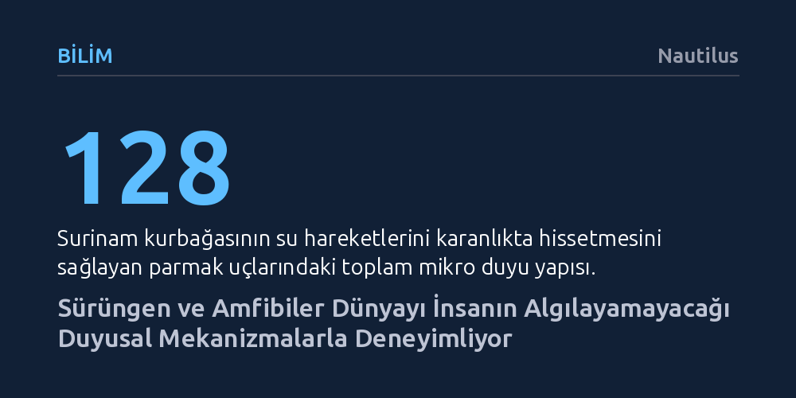

BILIM · Nautilus · 2026-10-11
Sürüngenler ve iki yaşamlılar; kızılötesi ışınım algılama, parmak uçlarındaki mikro sensörlerle sudaki titreşimleri yakalama ve yerkürenin manyetik alanıyla yön bulma gibi sıra dışı duyusal sistemler kullanıyor. Bu mekanizmalar, görme veya duymanın yetersiz kaldığı zorlu habitatlarda canlıların avlanmasını ve binlerce kilometrelik göç yollarını tamamlamasını sağlıyor.
İnsan merkezli beş duyu anlayışını yıkarak doğada dünyayı algılamanın kızılötesi görmeden manyetik alan okumaya kadar sayısız farklı yolu olduğunu gösterir.

İnsanlar çevrelerini genellikle görme, işitme, koklama, tatma ve dokunmadan oluşan beş klasik duyu üzerinden algılar. Oysa evrimsel biyoloji, özellikle sürüngenler ve amfibiler (iki yaşamlılar) söz konusu olduğunda, bu beş duyunun sınırlarını aşan çok daha zengin çözümler geliştirmiştir. Karadaki hava ortamı ile suyun fiziksel dinamikleri arasındaki derin farklar, özellikle sucul ve yarı sucul canlıları alışılmışın dışında duyusal donanımlar geliştirmeye yöneltmiştir.
Bunun en çarpıcı örneklerinden biri Amazon havzasının çamurlu ve zifiri karanlık sularında yaşayan Surinam kurbağasıdır. Neredeyse körelmiş gözlere ve yassı bir gövdeye sahip olan bu canlı, görme yetisinin işlevsiz kaldığı sularda kusursuz bir avcıdır. California Üniversitesi araştırmacılarının ortaya koyduğu üzere, bu başarının ardında kurbağanın sıra dışı parmak uçları yatar. Dört ayağındaki her parmağın ucunda on altışar minik lobdan oluşan ve toplamda 128 mikroskobik duyu yapısına denk gelen zengin bir sinir ağı bulunur.
Ön ayaklarını iki yana açarak karanlıkta pusuya yatan kurbağa, sudaki en ufak titreşimi bu loblarla anında hisseder. Yakınına bir balık yüzdüğü anda, saniyenin küçük bir kesrinde ağzını açarak avını adeta bir vakum gibi içine çeker. Bu mekanizma, bir canlının hiç görmeden yalnızca dokunsal titreşimlerle eksiksiz bir avlanma haritası çıkarabileceğinin somut bir kanıtıdır.
Sürüngenler alemindeki duyusal dönüşümler yalnızca mekanik dokunmayla sınırlı değildir. Çıngıraklı yılanlar, boalar ve pitonlar gibi avcı grupları, insanların algı spektrumunun tamamen dışında kalan kızılötesi ışınımı (termal ısıyı) tespit edebilen özel yapılarla donatılmıştır. "Çukur organı" adı verilen bu yapılar, çıngıraklı yılanlarda göz ile burun deliği arasında birer çukur; boa ve pitonlarda ise ağız çevresinde çok sayıda küçük yarık şeklinde konumlanır.
Zifiri karanlık bir odadaki sıcakkanlı bir kemirgen insan gözü için görünmez olsa da bu yılanlar için soğuk arka planın önünde parlayan canlı bir termal silüettir. Çukur organlarının içindeki aşırı duyarlı sinir uçları, ortamdaki en küçük sıcaklık dalgalanmalarını bile kaydeder. Dahası, yılanın sinir sistemi bu termal veriyi optik görme duyusuyla harmanlayarak tek ve bütünleşik bir hedef görüntüsü oluşturur.
Gece avlanan bir yırtıcı için bu yetenek muazzam bir avantaj sunar; çünkü sıcakkanlı bir av ne kadar iyi gizlenirse gizlensin kendi vücut ısısını kapatamaz. Yılanlar ayrıca çatallı dillerini havaya savurarak kimyasal molekülleri toplar ve tat ile kokuyu harmanlayarak hedeflerinin izini sürer.
Amfibiler kimyasal ve fiziksel algıyı memelilerden çok farklı bir boyuta taşır. Derileri sadece koruyucu bir kılıf değil; solunum yaptıkları, su içtikleri, zehir salgıladıkları ve çevreleriyle sürekli kimyasal alışverişte bulundukları devasa bir duyu organıdır. Suya karışmış kimyasallar ve ortamın fiziksel koşulları, bu geçirgen deri üzerinden kesintisiz biçimde analiz edilir.
Bunun ötesinde, amfibilerin duyusal biyolojisindeki en ilginç boyutlardan biri kutanöz mekanoresepsiyondur; yani derinin tüm yüzeyiyle mekanik uyaranları algılama yeteneğidir. Sürekli etrafı gözetleyen, kulak kabartan veya çevresini tarayan memelilerin aksine, bir kurbağa saatlerce tek bir hareket yapmadan bekleyebilir. Vücudunu kaplayan dokunma, basınç ve titreşim reseptörleri, kurbağanın etrafındaki dünyayı adeta pasif bir radar istasyonu gibi izlemesini sağlar.
Gereksiz hareket etmek hem avcıların dikkatini çekme hem de avı ürkütme riski taşıdığından, kurbağalar bu hareketsizliği bir hayatta kalma stratejisine dönüştürmüştür. Hatta kimi kurbağa türleri, yaklaşan bir avcı 38 ila 76 santimetre mesafeye gelene kadar en ufak bir tepki vermez; tehlikeyi gözleriyle takip etmek yerine derilerindeki titreşim algılayıcılarıyla mesafe ölçümü yaparlar.
Sürüngen ve iki yaşamlıların algı yetenekleri arasında belki de en gizemli olanı manyetoresepsiyondur. Semenderlerden kurbağalara, timsahlardan kertenkelelere ve deniz kaplumbağalarına kadar geniş bir grup canlının, laboratuvar deneylerinde yerin manyetik alanına tepki verdiği kanıtlanmıştır.
Bu manyetik duyu, özellikle uzun mesafeli göçler yapan türler için hayati bir pusula işlevi görür. Yumurtadan yeni çıkan genç deniz kaplumbağalarının açık okyanusa girdikten sonra 13.000 kilometreye varan destansı yolculukları bunun en bilinen örneğidir. Deneyler, bu kaplumbağaların Dünya üzerindeki farklı coğrafi noktalara özgü manyetik alan değişkenliklerini ayırt edebildiğini göstermektedir.
Yerkürenin manyetik alanı gezegen boyunca düzenli değişimler gösterdiğinden, bu alanı hissedebilen bir sinir sistemi gezegenin kendisini doğal bir navigasyon haritasına dönüştürür. GPS cihazı ya da manyetik pusulası olmayan minik bir kaplumbağa, insanların doğrudan algılayamadığı küresel bir jeofizik kuvveti okuyarak rotasını bulur. Gezegenin manyetik dokusu, canlının algıladığı dünyanın doğal bir parçası haline gelir.
Tüm bu bulgular, doğayı deneyimlemenin insan merkezli tek bir şablonu olmadığını açıkça ortaya koyar. Evrim, insanların hayal bile edemeyeceği ya da yalnızca gelişmiş teknolojik aygıtlarla ölçebildiği manyetik dalgaları, kızılötesi ışımaları, kimyasal izleri ve mikro titreşimleri biyolojik organlara dönüştürmüştür.
Bir göletin kenarında kımıltısız duran bir kurbağa, çatallı dilini havaya doğru savuran bir yılan veya okyanusun derinliklerinde kaybolan bir kaplumbağa gördüğümüzde; onların sadece çevrelerine bakmadıklarını, bizim için tamamen görünmez olan fiziksel kuvvetlerle örülü bambaşka bir evrende yaşadıklarını hatırlamak gerekir.